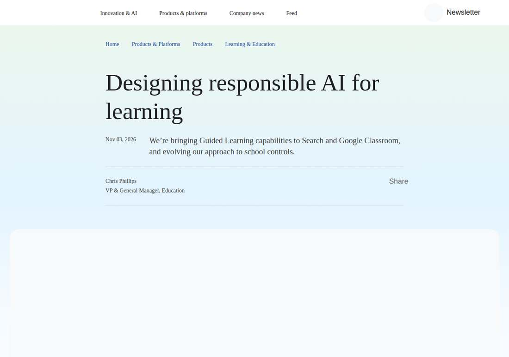

Google sets new rules for classroom AI: off by default, on only with a school's say-so
Google announced on November 3, 2026 that Guided Learning is live globally in Classroom and will be piloted in student Search in November, while Gemini and Search will be off by default for K-12 student accounts and must be switched on item by item by administrators.

- 01THE RELEASE — Google announced on its official blog on November 3, 2026 that Guided Learning is live in Classroom and being piloted in Search, and flipped the K-12 control defaults.
- 02THE CONFIRMATION — Google's blog and Chalkbeat's report confirmed on the same day the feature scope, the off-by-default rules and the cost that banning AI also means banning search.
- 03THE WATCHPOINT — Feedback from the November US pilot, the share of districts that actually opt in, and the final rules for the general rollout in early 2027.
WHAT HAPPENEDWhat Happened
Google announced on its official blog on November 3, 2026 that Guided Learning is now live globally in Google Classroom, and that in November it will pilot access to Google Search on student accounts at selected US schools.
Guided Learning is a tutoring mode built into Gemini: instead of giving answers directly, it uses open-ended questions and step-by-step breakdowns to walk students through a problem. Inside Classroom, teachers can assign Guided Learning work and watch student conversations in real time to see where the class is getting stuck, and students cannot switch back to standard Gemini from within Classroom.
The bigger change is in the default controls: Gemini, Gemini Notebook, Gemini in Classroom and Google Search will all be switched off by default for K-12 student accounts, until a school administrator turns each one on explicitly — reversing the August 2026 approach, under which Gemini was on by default in Classroom.
The logic of the Search pilot: when the system judges that a student is seeking a particular kind of homework help, it guides step by step instead of going straight to an answer. Paste in a complex physics problem or ask it to help write a book review, and the student sees prompts to think rather than a finished answer.
The backdrop is pushback from schools: large districts such as New York and Los Angeles are tightening limits on AI in classrooms, parents are demanding more control, and the US government is also considering making AI limits or parental opt-out a condition for schools to receive internet subsidies.
WHY IT MATTERSThe default flip matters more than the feature launch
In August the default was on; in November it flipped to off, with opt-in required item by item — a 180-degree reversal of the default. Defaults determine the actual state at most schools: before, schools had to act to turn it off; now they have to act to turn it on, and the friction for AI in classrooms has moved from the exit side to the entry side.
For Google, this is trading control for a ticket to stay in the classroom: handing the decision back to districts in exchange for remaining in classrooms amid the backlash. The next signal is the share of large districts that actually turn it on, and the final form of the controls when the rollout goes general in early 2027.
WHY IT MATTERSSearch and AI are fused: banning AI means banning search
The key cost Chalkbeat surfaced: Google says Search and AI are now deeply integrated and AI cannot be switched off separately. A school that bans AI outright will also lose Google Search, and its students will simply see a notice that search is unavailable.
That makes the district's choice binary: accept AI search in tutoring mode, or give up search as well. Common Sense Media has warned that Guided Learning can still be coaxed into doing students' homework for them, and the line between tutoring and doing the work is not clear. Whether teacher feedback during the pilot can tighten that line is the real test of this update.
SIGNAL JUDGMENT — ANALYSISGoogle hands the switch for classroom AI back to schools
Tokenta Signal's judgment: the real signal in this update is not Guided Learning itself, but Google surrendering the default in the face of pushback. Taking the on-switch back from the platform and handing it to districts is the standard move for AI companies to keep their classroom ticket under regulatory and parental pressure. The next signal is the share of districts that actually turn it on, and whether teacher feedback during the pilot can tighten the line between tutoring and doing the work.
WHAT REMAINS UNCERTAINWhat Remains Uncertain
EVIDENCEEvidence

Confirmed by two sources, Google's official blog and Chalkbeat's report; the original link was opened and verified.
PRIMARY SOURCESPrimary Sources
- Google Official Blog
https://blog.google/products-and-platforms/products/education/ai-learning-era-updates-2026/ - Chalkbeat Report
https://www.chalkbeat.org/2026/11/03/google-pushes-gemini-guided-learning-amid-ai-backlash/
RELATEDRelated Intelligence
- Canva Restructures 22% of Its Workforce as AI Serving Costs Bite: 1,271 Affected, Growth Forecast Cut to 20%
- GlobalFoundries Posts Record 31.4% Margin as AI Packaging Deals Stack Up: $2B TSMC Pact, $21B U.S.-Japan Fabs
- Lambda Pledges $33.1 Billion for Alabama AI Campus, Revealing Itself as Project Red Clay's Tenant
- Kimi K3.1 Pro Weights Land on Hugging Face, Closing Moonshot's November 4 Promise